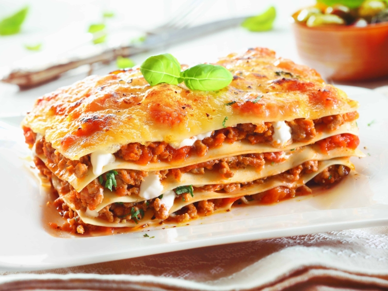

Home page
Lasagna

Description
A recipe from Emilia-Romagna, Italy. This lasagne verde made with spinach pasta cannot be beaten. It's excellent if you want to impress some guests - or even yourself. It mat be a bit time-consuming, but it's well worth the TLC you put into it.
Ingredients
- Pasta
- 5 ounces spinach - rinsed, stemmed, and dried
- 5/8 cup semolina flour
- 2 eggs
- 1 teaspoon salt
- 1 1/2 cups all-purpose flour
- Ragu
- 2 tablespoons butter
- 1 carrot, diced
- 1 stalk celery, diced
- 1 onion, diced
- 2 slices bacon, diced
- 3 1/2 ounces lean ground pork
- 3 1/2 ounces lean ground beef
- 3 1/2 ounces minced ham
- 1 cup beef stock
- 2 tablespoons tomato paste
- 1 teaspoon dried oregano
- salt and pepper to taste
- 3 1/2 ounces chicken livers, trimmed and chopped
- Béchamel
- 2 tablespoons butter
- 2 tablespoons all-purpose flour
- 2 cups warm milk
- 1 pinch salt
- 1 pinch ground nutmeg
- Cheese
- 1 pint ricotta
- 1 2/3 cups grated Parmesan Cheese
- 3 tablespoons butter
Steps
- Lake the pasta
- Make the ragu
- Make the béchamel
- Cook pasta
- Finish ragu
- Preheat the oven to 200°C
- Assemble lasange
- Bake in oven